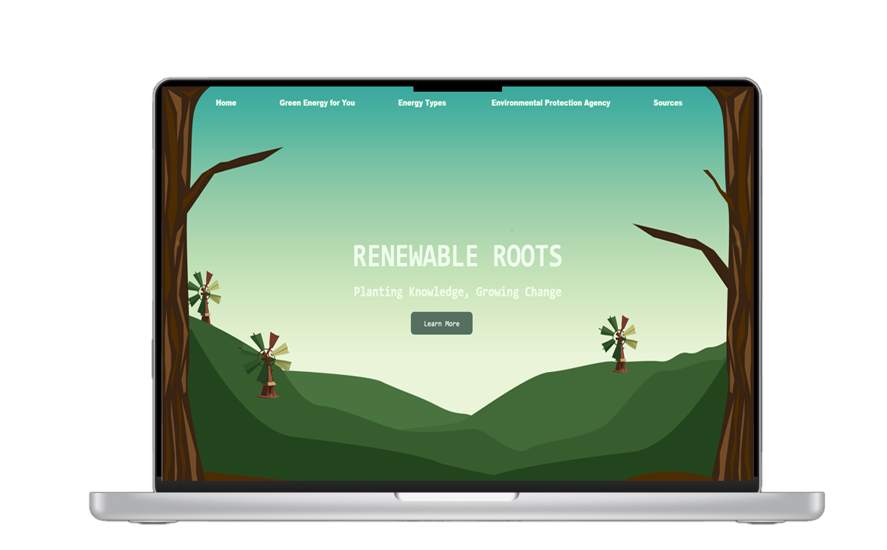
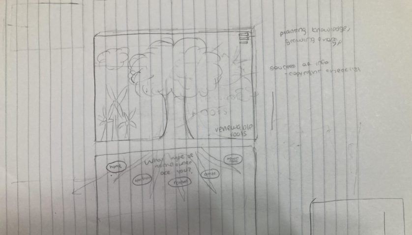
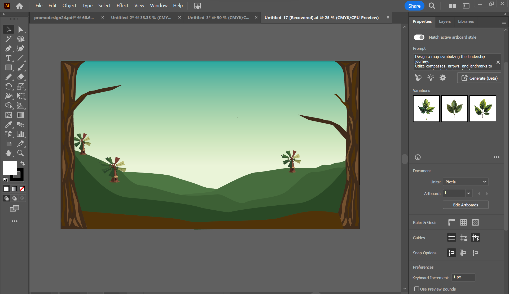
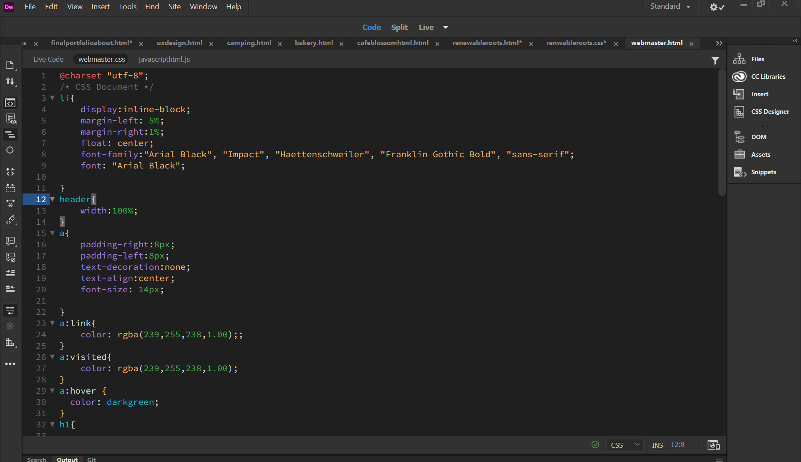
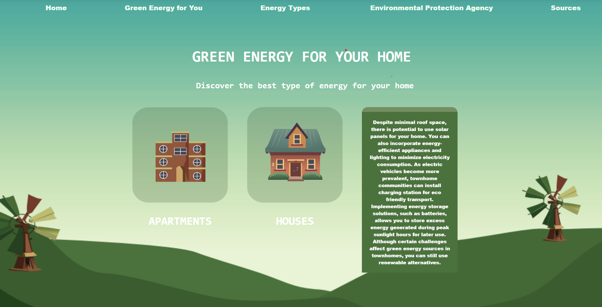
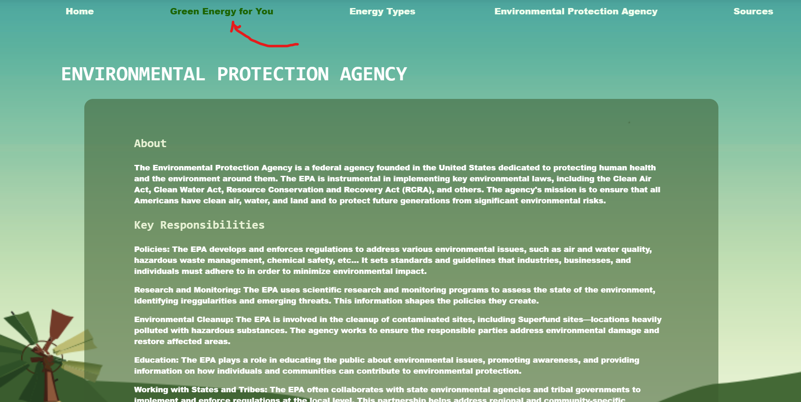

RENEWABLE ROOTS
"Renewable Roots" stands as a comprehensive digital platform dedicated to the dissemination of knowledge on sustainable energy practices. The platform offers an extensive array of resources covering various renewable sources such as solar and wind energy. Real-world applications are explored through in-depth case studies, illustrating successful adoption of green energy solutions. Whether for homeowners or businesses, Renewable Roots serves as an informative guide for those contemplating a shift towards sustainability. For this project, I created a fully coded interactive website with an enhanced user experience.
DESIGN PROCESS
I began by conducting an in depth research outline on green energy. It was vital to center the website around sustainable practices and provide users with detailed information on how they could incorporate energy into their homes. I also created a cohesive color scheme using fresh ecletic colors to bring energy to the website. I understood that while this was an informational website, throwing too many words at a user destroys the user experience so we decided on ways to organize the information in a simplified concise design with several icons.
The inception of our low-fidelity mockup began with a collaborative and hands-on approach, utilizing the simplicity of pen and paper. Our design team gathered to ideate and sketch out the initial concepts on paper, fostering a tangible and organic creative process. Each member contributed ideas and perspectives, translating them into rough sketches that captured the fundamental layout and structure of the interface.This analog approach allowed for quick iterations and immediate feedback, fostering a dynamic and iterative design process. With the low-fidelity mockup on paper, we were able to visualize the user interface, experiment with different layouts, and make swift adjustments based on the team's discussions.
Next, I transferred our vision onto illustrator creating the backgrounds, icons, and design from scratch. This process allowed me to design the interface with full customization, I used several shades of green to enforce the idea of green energy. Using a minimalistic yet impactful design for icons and the background empowered our vision.
Finally, I began to code the website on Dreamweaver. Using CSS, HTML, and Javascript to enhance the user experience. I began to transfer the information from my research to concise yet detailed excerpts on the website providing each user with a better user experience. I used CSS to adjust the background and create an appealing user friendly design, HTML to encode the important information and cover our research, and JavaScript to enhance the user flow.
User Interface
The primary goal of this project was to enhance user experience. The flipping animation not only captures users' attention but also provides a seamless way to present bite-sized information on both sides of the card. This approach improves information accessibility, allowing users to effortlessly explore additional details without navigating to separate pages.
I also incorporated hover animations. When a user hovers over an element, whether it's a button, image, or link, animations can provide instant visual feedback, signaling that the element is interactive. This immediate response helps users understand the functionality of elements on the page, reducing confusion and creating a more intuitive interface. Hover animations also contribute to the overall aesthetic appeal of a website, adding a layer of sophistication and interactivity. This enhanced the user experience.
Takeaways and Additional Steps
Creating this website purely from code allowed me to understand the fundamentals of coding and design. I was able to use my previous knowledge of design on figma and engineer it into code. It allowed me to explore informational websites and work out ways to present large text to users without overwhelming them. While I did use some user feedback, the next steps would be to increase this feedback and increase user testing in order to improve the website and create the best user experience. This website was pivotal in my understanding of web design and allowed me to empathize with users better.